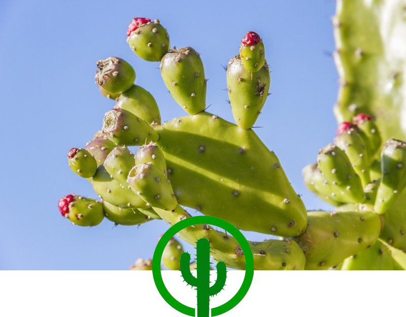

Sveiki
Turi naudingu vitaminu!

Žali
Kaktusai yra žali!
Sultingi
Jie yra labai sultingi!
Skanūs
Kaktusų skonis tiesiog nuostabus!
Sveikas lankytojau!
Ar žinojai, kad kai kurie kaktusai gali gyventi iki 200 metų, nepaisant atšiaurių dykumos sąlygų? Jei nežinojai tai dabar žinai! Taip pat, kaktuso spygliai ištikrūjų nėra spygliai - tai labai modifikuoti lapai! Tie pikti spygliai skirti apsaugoti dykumos kaktusą nuo plėšrūnų, tokių kaip graužikai, paukščiai, lokiai, vabzdžiai... Štai kodėl dygliuotus kaktusus geriausia laikyti mažiems vaikams ir smalsiems augintiniams nepasiekiamoje vietoje.
Ar žinojai, kad kai kurie kaktusai gali gyventi iki 200 metų, nepaisant atšiaurių dykumos sąlygų? Jei nežinojai tai dabar žinai! Taip pat, kaktuso spygliai ištikrūjų nėra spygliai - tai labai modifikuoti lapai! Tie pikti spygliai skirti apsaugoti dykumos kaktusą nuo plėšrūnų, tokių kaip graužikai, paukščiai, lokiai, vabzdžiai... Štai kodėl dygliuotus kaktusus geriausia laikyti mažiems vaikams ir smalsiems augintiniams nepasiekiamoje vietoje.
Keletas kaktusų rūšys
Peyote
Brasilicereus Brachycereus Borzicactus Blossfeldia Bergerocactus Espostoopsis Deamia Pereskiopsis
Peyote
Brasilicereus Brachycereus Borzicactus Blossfeldia Bergerocactus Espostoopsis Deamia Pereskiopsis

Kalba
Ši svetainė buvo sukurta su HTML ir CSS kalba § 2022 09 17 - Snake (Julius Burdyginas)
Ši svetainė buvo sukurta su HTML ir CSS kalba § 2022 09 17 - Snake (Julius Burdyginas)